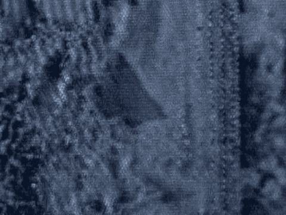
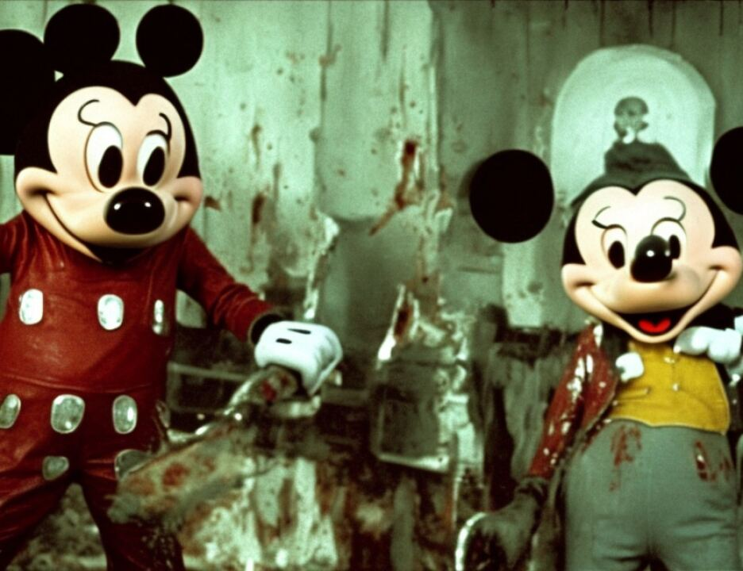

14 in the Sudan, so he really couldn't know about these fatwahs
15 or these informations that was given out.
16 One of the good things about having more than one
17 lawyer is that the other lawyer can be checking things out,
18 and it turns out that all the photographic identifications
19 that came in as exhibits, all the photographs that came in as
20 exhibits in this case as al Qaeda, three came in with
21 Mr. Al-Fadl and all the rest came in with Mr. Kherchtou.
22 And the three that came in with Mr. Al-Fadl were --
23 excuse me, take it back. Four or five came in with
24 Mr. Al-Fadl and I believe that they were all like Mr. Bin
25 Laden and a couple of others, and I think they even brought in
5670
1 Abu Hafs because he finally identified Abu Hafs from a certain
2 picture. Everything else came from Mr. Kherchtou.
3 So if the government gets up and says, well,
4 Mr. Kherchtou wouldn't have heard of it because he wasn't
5 around the Sudan that much, I respectfully submit that the
6 only person who was paying attention to anything going on was
7 Mr. Kherchtou because Mr. Al-Fadl was doing his own thing and
8 not paying attention to a lot what was going on and came here
9 and told you things that he had no clue about.
10 The government got up and told you one of the major
11 pieces of evidence that Mr. El Hage, Wadih El Hage, either was
12 al Qaeda or certainly was involved with al Qaeda is that he
13 was the al Qaeda payroll person for a while. I remember that.
14 I remember the testimony back when Mr. Al-Fadl testified and I
15 found the related testimony concerning Mr. Al-Fadl concerning
16 payroll.
17 Direct examination for Mr. Al-Fadl on page 249:
18 "Q. In 1991 was al Qubashi the Sudani in that office?
19 "A. Yes.
20 "Q. Did there come a time when al Qubashi left that office?
21 "A. Yes.
22 "Q. Do you know exactly when that was?
23 "A. I think June 9, 1993.
24 "Q. When he left that office, who moved into that office?
25 "A. Sheikh Sayyid el Masry.
5671
1 And where did he get that information from? He got
2 it from Wadih El Hage. Now we're talking about getting that
3 money from Sheik Sayyid el Masry on McNimr street sometime
4 after June 3, 1993. He says, if you see lower down, how he
5 did it. Then further down, "He trained and he -- did he train
6 anybody?" This is two people, being Abu Quadashi and Wadih El
7 Hage. He trained them both to do it, to give the money.
8 Next page. And there was a file. Of course he never
9 identified anything of Mr. El Hage's file. Never identified
10 any personal information from Mr. El Hage's file. Never even
11 testified there existed an El Hage file.
12 Now, if you look down at page 66, this is from Mr. Al
13 Ridi. And the dark lines are not the testimony, the dark
14 lines are my summation to you that Mr. Al Ridi's testimony, I
15 submit to you, is a lot more reliable than Mr. Al-Fadl's
16 testimony. So please don't think that that's part of the
17 transcript.
18 "Q. When did he fly the plane into the United States?
19 "A. The early part of 1993. Then he went to the office to
20 get the accounting, to get the rest of his money.
21 "Q. Where did he go?
22 "A. He went to a nice area that was a residential area."
23 We know from the testimony that the residential area
24 is the Riyadh area, the area where Mr. Bin Laden moved his
25 offices from McNimr Street to the Riyadh area. I don't recall
5672
1 the name because I didn't write it down, and the rest of the
2 offices remained on McNimr Street.
3 "Q. And the offices there in the front, who was there?
4 "A. In the office in the front," next page, "was Wadih El
5 Hage in a small desk."
6 If Wadih El Hage, in the beginning of 1993, is now in
7 the Riyadh area, how is he the al Qaeda paymaster in McNimr
8 Street? Well, he can't be. And your choice is to accept the
9 testimony of Mr. Al Ridi as to going to see the office where
10 Mr. El Hage was at or believe the testimony of Mr. Al-Fadl as
11 to Mr. El Hage became the payroll master of al Qaeda.
12 I also ask you to reject the government's description
13 of the role of Mr. El Hage as a gatekeeper. He testified in
14 1997 in the Grand Jury. At that time he couldn't possibly
15 know that Al-Fadl was cooperating. At that time the
16 government says he lied many times. And what did he do? He
17 said that he was a personal secretary for Mr. Bin Laden at the
18 times he wasn't traveling.
19 Now, was that an answer to keep him out of trouble or
20 was that just an honest answer? And what did he do? He made
21 appointments. Did he know that there was appointments made by
22 somebody else that was "secret"? Yes, he knew that because he
23 didn't do them. But he placed himself there, and as his books
24 show, he was there when he went traveling and he was traveling
25 a lot. And as his books show, he made appointments for
1